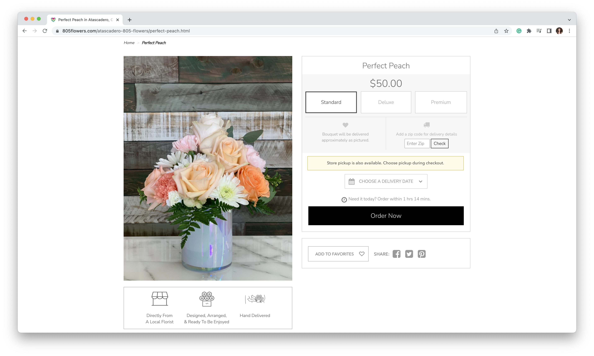
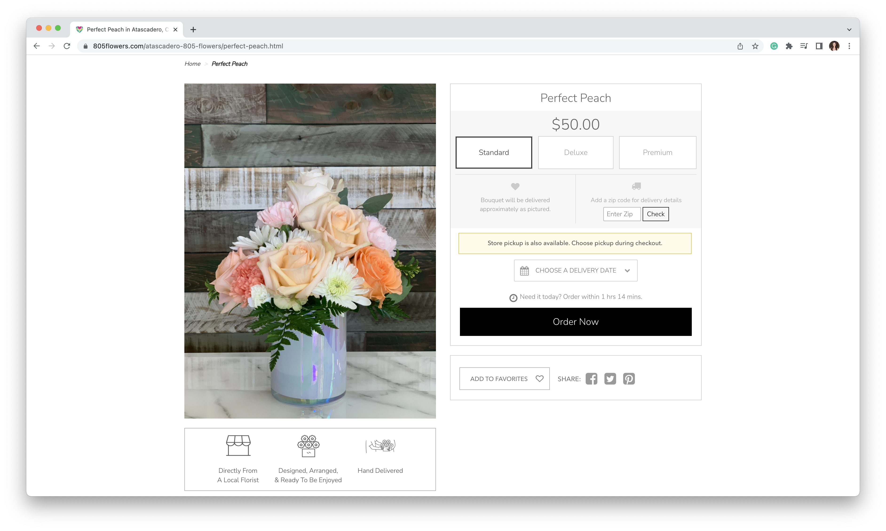
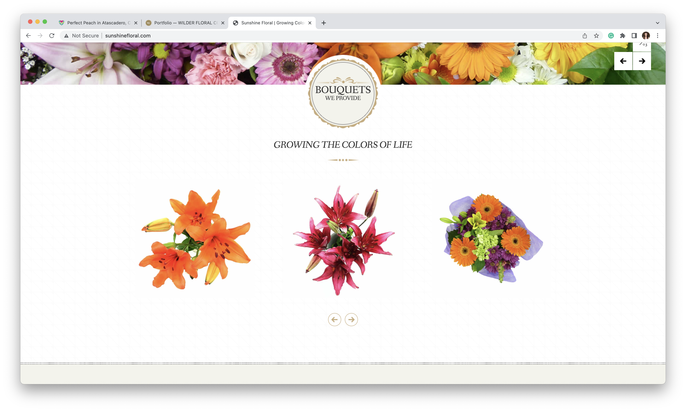

Final project proposal
Introduction
Sunshine Florist
Sunshine Florist is a small floral shop located in San Luis Obispo, CA. Our business strives to provide our clients with modern, romantic, and memorable floral designs that will stand out at their events. We provide bouquets and installations for weddings and events across the central coast.
Target audience
Our target audience includes anyone who is in need of individual arrangements for decor purposes or special occasions. We also include those who are in need of arrangements in large quantities for events such as weddings, parties, and funerals.
Our target audience visits our site in search of the perfect floral designs and how to place an order for arrangements or installations.
Comparative analysis
Wilder Floral Co.


805 Flowers
 

Sunshine Floral

Website content
Home
Arrangements that Shine
Sunshine Florist is a small floral shop located in San Luis Obispo, CA. Our business strives to provide our clients with modern, romantic, and memorable floral designs that will stand out at their events. We provide bouquets and installations for weddings and events across the central coast.
[Image of a floral arrangement]
Services
View the list below to see which service best suits your needs.
Individual Arrangements
We have a variety of predesigned arrangements as well as the option to design your own. To place a custom order please contact us via email at sunshineflorist@gmail.com
Parties
Make your parties extra special by purchasing our party package! This includes a group of arrangements that are specifally tailored to your events venue and design aesthetic.
Funerals
We offer a wide variety of large and small sophistocated arrangements for funeral services as well as individual bouquets to gift to a loved one.
Seasonal Holiday Arrangements
When your next favorite holiday comes around, check out our holiday specific arrangements! These arrangements include popular seasonal flowers as well as spirited packaging to complete the design.
Engagements
Planning to pop the question soon? Let us in on your secret proposal plans: we will brainstorm ideas with you based on your story as a couple to make the setting magical.
Elopements
A two piece package for the couple of honor, this is the perfect package for elopements, or for the fashionable bride who dreams of a beautiul bouquet. We package everything nicely for transport during your drive along the scenic Central Coast to your elopement destination.
Full Weddings
We start at the beginning with you and your planner to create a cohesive concept, and bring that vision to life on event day! Hand delivered to your venue with an elevated level of care, we'll make sure all your flowers arrive in the best quality, place all the big and small details at the right times, and make sure that your event flowers are presentable from the first impression as your guests arrive until the very end.
A-La-Carte
For smaller, more intimate events, we have an option to build your own package from our budget-friendly, flexible menu of offering, for either pick-up from our Nipomo-based studio or a small service fee for delivery drop-off. This option is perfect for those who don't require event set up.
[Image of a floral arrangemnet]
About
Sunshine Florist was created by a 2010 Cal Poly, SLO graduate and is run by a team of Cal Poly grads as well as current students. Our team has a wide range of backgrounds including graphic design, event planning, graphic communication, and more. We strive to bring our clients memorable arrangements that shine wherever they are. Each piece is made with extra care and the freshest flowers. We highly encourage community members as well as those along the central coast to reach out to us for a service like no other.
[Image of a team member working on an arrangement]
Location
Our boutique is located in the heart of San Luis Obispo. You can find us downtown at 1055 Osos St, San Luis Obispo, CA 93401. Our shop is open from 9am-6pm throughout the week.
[Image of our floral shop]